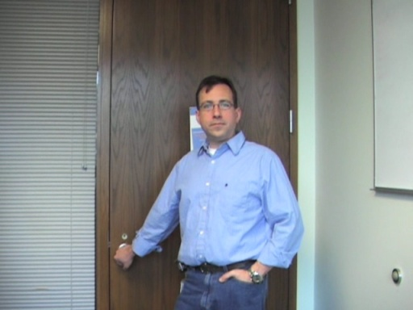
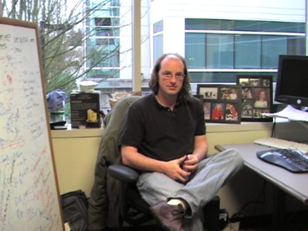
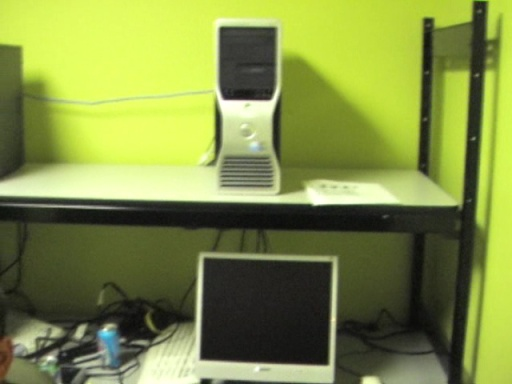
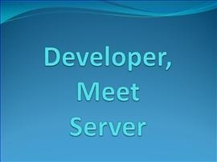
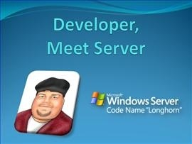

Shows - Developer Meet Server
Shows - Developer Meet Server
Welcome to the show " developer meet server." i am your sincere, humble (as ever), gracious and wonderful host chef tour guide jason olson. in this show, we will be diving through all the various cool …
Application Compatibility - Debugging [0:36:41] [2008/01/29]In this video, we sit down (well, stand up actually) with Chris Jackson and Gov Maharaj to chat about debugging application compatibility issues (and some of the things Microsoft has done to mitigate…
Application Compatibility - MSI Installer Issues [0:30:55] [2008/01/19]
In this video, we chat with Robert Flaming about application compatibility issues around Windows Installer for Windows Vista and Windows Server 2008. Mark Taylor, from our first Application…
Application Compatibility - Overview [0:42:30] [2008/01/10]In this video, our good friend
Jason Olson chats with Maarten Van De Bospoort, Mark Taylor, and Pat Altimore about Windows Server 2008 Application Compatibility.
We discuss a bunch of topics in…
Screencast - Transactional NTFS and WCF [2007/03/31]Welcome back to the "Developer, Meet Server" screencast everybody .
In this screencast we will dive back into Transactional NTFS and look at how you can use it with WCF to build powerful…
Screencast - Transactional NTFS [2007/03/10]Welcome everybody to the inaugural, first ever, grand opening, “opening the doors to the public” celebration day kick-off for the new “Developer, Meet Server” screencast series.
I am your sincere,…